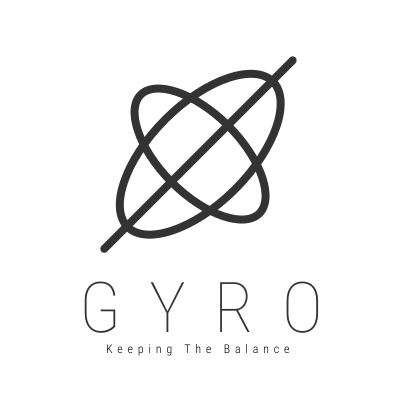

Gyro is a high-level, statically typed, compiled programming lanaguage written in pure C (and JavaScript) with the goal of creating an extensible and simplistic environment for use in embedded web applications.
Take a look at the syntax for more information.
Gyro has been developed with the idea of a fast and simple language in mind.
It shares a lot of it's syntax with Typescript and old school C. Take a look at
this snippet.
float: variable = 5.5;
// We can define comments using double slashes.
int: main = func(...args) {
// And we call methods by using the `->` arrow syntax.
int: round = if args->0 > 0 then 1 else 0;
// We can also use the `return` keyword to return a value.
return round;
}
Since Gyro is statically typed, annotations have to be added to help the
compiler figure out the optimal solution for optimizing the given code. Gyro
can also be interpreted dynamically, removing the need for type annotations,
they are - however - a best practice for making code more readable and can help
with IDE highlighting.
The full official grammar of Gyro is described here.
Here are some important parts of it:
digit = "0" | "1" | "2" | "3" | "4" | "5" | "6" | "7" | "8" | "9"
character = "a" ... "z" | "A" ... "Z"
(* Identifiers are the names of variables, functions, and types. *)
identifier_start = character | "_" | "$" | "?" | "!"
identifier = identifier_start + (digit | character | "_" | "$" | "?" | "!")*
(* Binary operators. *)
bin_op = "+" | "-" | "*" | "/" | "=" | "==" | "!=" | "<" | "<=" | ">" | ">=" | "&&" | "||"
(* Keywords are internal names whose meaning can not be changed. *)
kw_static = "if" | "else" | "while" | "return" | "break" | "continue" | "for" | "in" | "true" | "false" | "null"
kw_weak = "do"
kw_reserved = "static"
There are plenty of programming languages out there that offer flexibility and
immense possibilities for any imaginable situation, why would Gyro stand out?
Gyro is syntax extensible (see dialects for examples), meaning you can define your own keywords,
operators, and functions. Gyro also offers better string manipulation since it
has been written with writers in mind. There is a high performance markdown and
HTML parser that has been implemented in Gyro making it very easy working with
web applications. Remember the Table of Contents from above? It has been
automatically generated while compiling. The code for that looks like this:
table_of_contents = toc("Table of Contents");
// Notice the `tilde` (~) sign being used as the write operation here.
~table_of_contents;
For more information take a look at the full Gyro Reference.
Built-in objects that are supported by the standard library are:
Array, Boolean,
Date, Error,
Function, Number,
Object, RegExp,
String, Symbol,
TypeError, Undefined,
Null, Int8Array,
Uint8Array,
Uint8ClampedArray,
Int16Array, Uint16Array,
Int32Array, Uint32Array,
Float32Array, Float64Array,
Map, Set, WeakMap,
WeakSet, Promise.